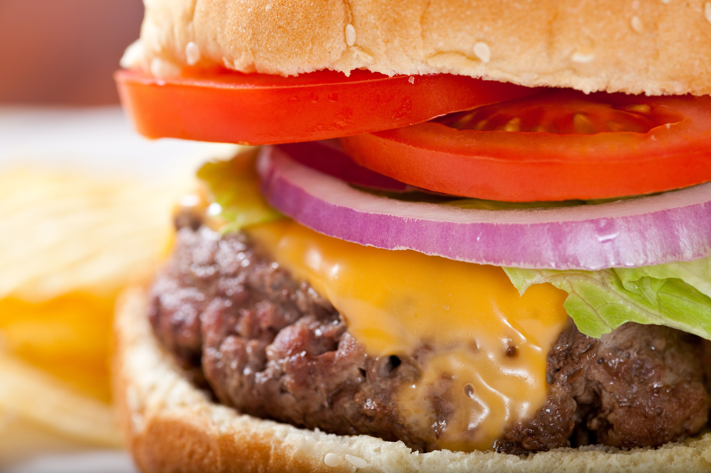

Cheeseburger

A basic looking cheeseburger. You should really look for another burger recipe.
Oh boy. Get ready to eat a burger that will fill you up and leave you completely unsatisfied. You're gonna need to add your own ingredients because this plain-ass burger is gonna leave wondering why you decide to eat play-doh for lunch.
Ingredients:
- Chuck roast ground beef
- Salt and pepper
- American yellow cheese & yellow cheddar cheese
- Lettuce, tomato, pickle
- Ketchup
- Brioche buns
Directions:
- Make burger patties
- Divide the beef into four portions
- Form each patty into 1/2 inch thick rounds
- Season both sides of patties with salt and pepper
- Grill patties over high heat until browned with visible grill marks (about 4 to 5 minutes per side)
- Add cheese, cover with a lid and cook until the cheese melts
- Serve on toasted brioche with your favorite fixings
Home